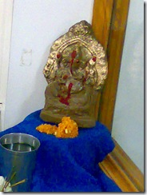

राधिका बुधकर जी और गणेशजी की चैट सुनकर मन में ठान लिया था कि हम इस बार पर्यावरण मित्र यानि इको फ्रेन्डली गणेशजी की मूर्ति की स्थापना ही करेंगे।
पिछले साल कुछ तमिल लोगों को काली मिट्टी के बने गणेशजी को केले के पत्ते पर घर ले जाते देखा था, सो इस बार हमने भी वैसे ही गणेशजी की स्थापना करने का निश्चय किया। बहुत खोजने के बाद आखिरकार मोंडा मार्केट में मूर्तियाँ बनाती हुई दो तीन स्त्रियाँ दिख गई। हम फटाफट पहुंचे और तीन मूर्तियाँ बनाने का ऑर्डर दे दिया। एक एक मूर्ति की कीमत मात्र बीस रुपये थी। जबकि बनावटी रंगो से बने गणेशजी की मूर्ति की कीमत ( उतनी ही साइज के) 110 रुपये।
ये मूर्तियाँ सिर्फ मिट्टी से बनी होती है इसमें कोई रंग का उपयोग नहीं किया जाता है।
हमने मूर्ति बनाती हुई महिला की कुछ फोटो भी खींची थी परन्तु वे पता नहीं क्यों मोबाइल से यहां अपलोड नहीं हो पाई। गणेशजी की स्थापना के बाद दूसरे मोबाईल से दो फॊटों और खींची जो यहाँ प्रस्तुत है। पहले में गणेशजी और दूसरी में गणेशजी के साथ मैं और हर्षवर्धन नाहर है।
इस बार हमने एक फूल भी भगवान को चढ़ाने के लिये नहीं तोड़ा बस दो अगरबत्तियाँ और दीपक जरूर जलाया है .. कुछ हद तक पर्यावरण को बचाने में मदद तो की ही है। 

फोटो में जो दिख रहा है वह फूल नहीं लड्डू है